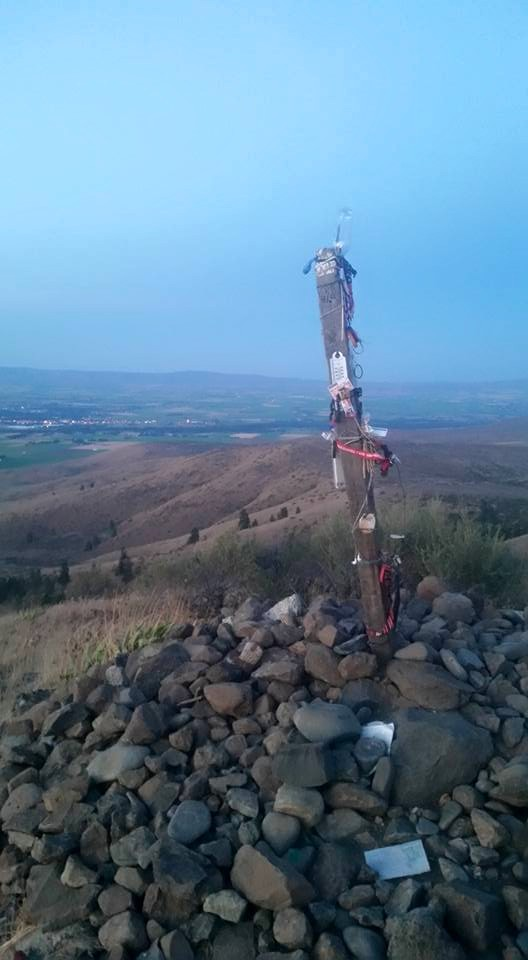
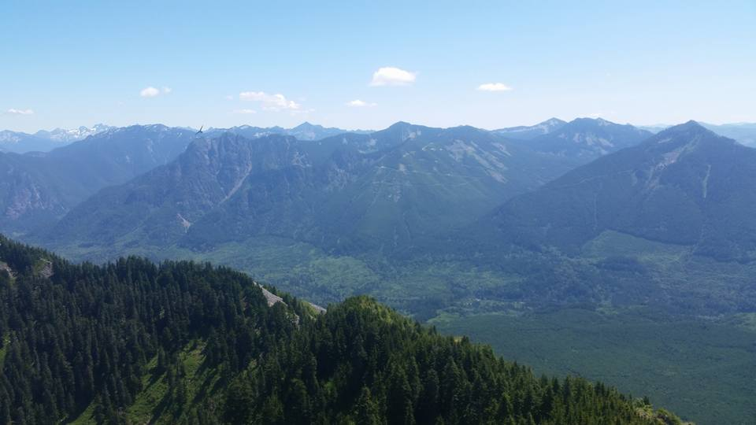
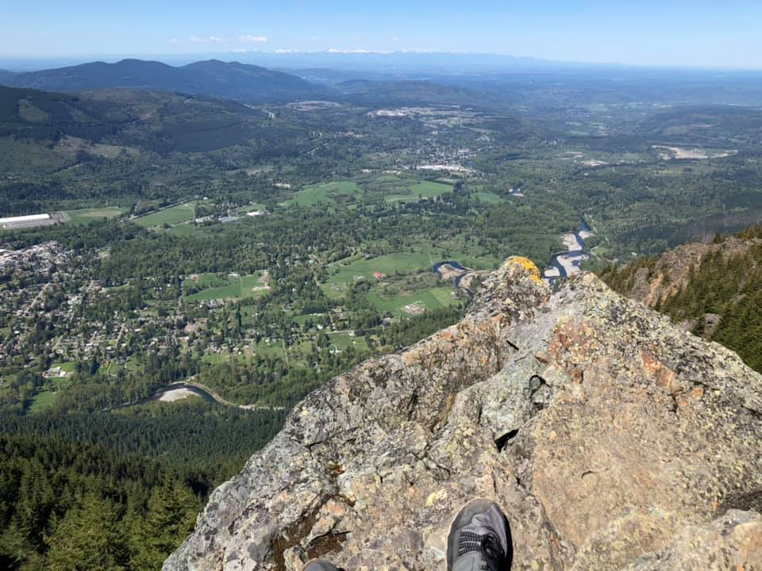
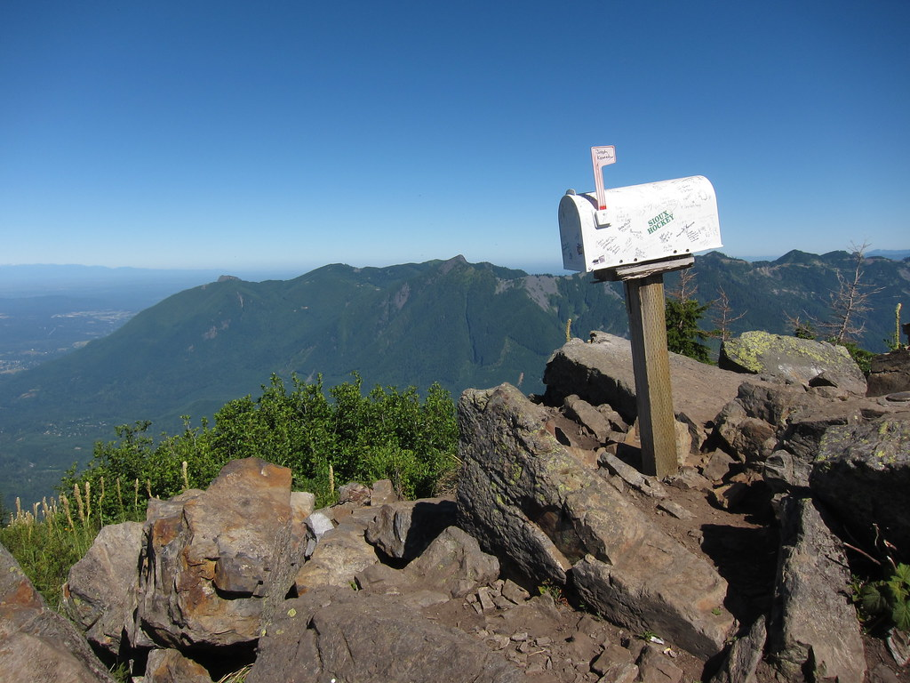
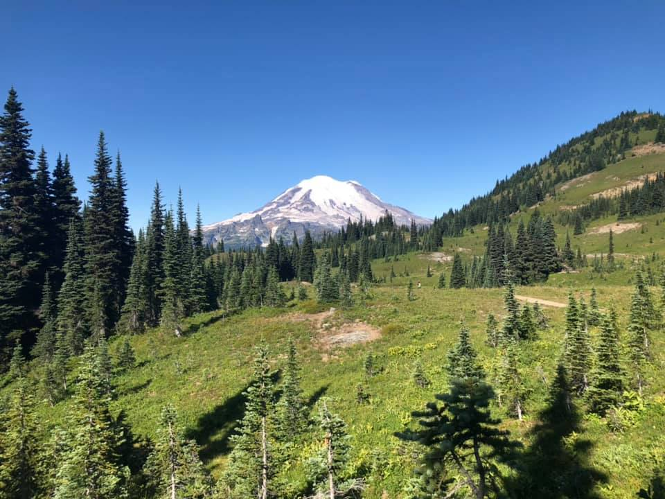
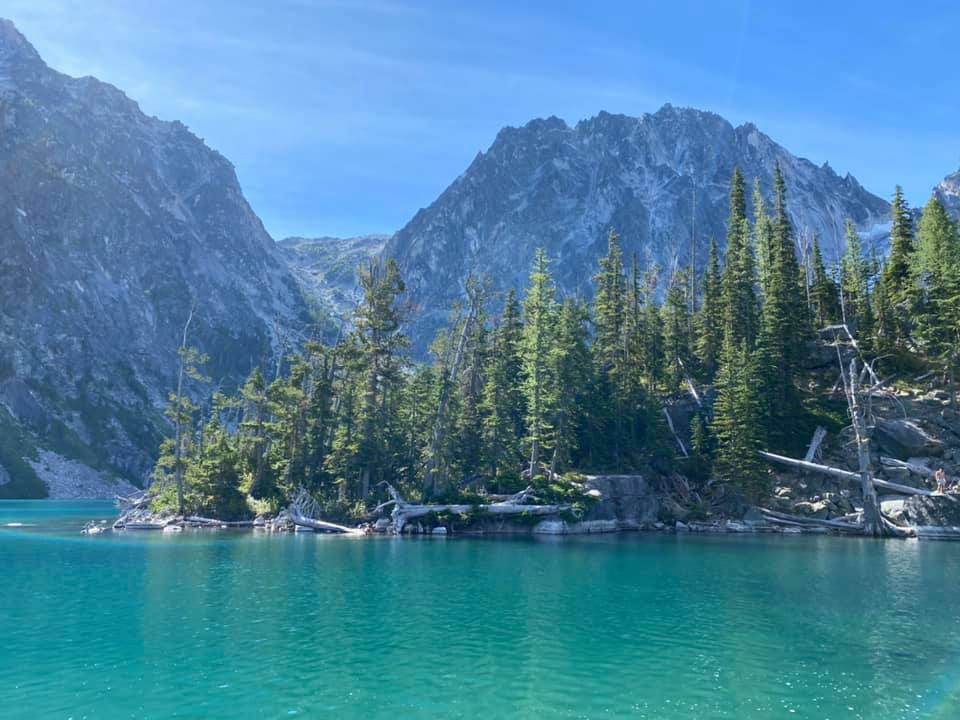
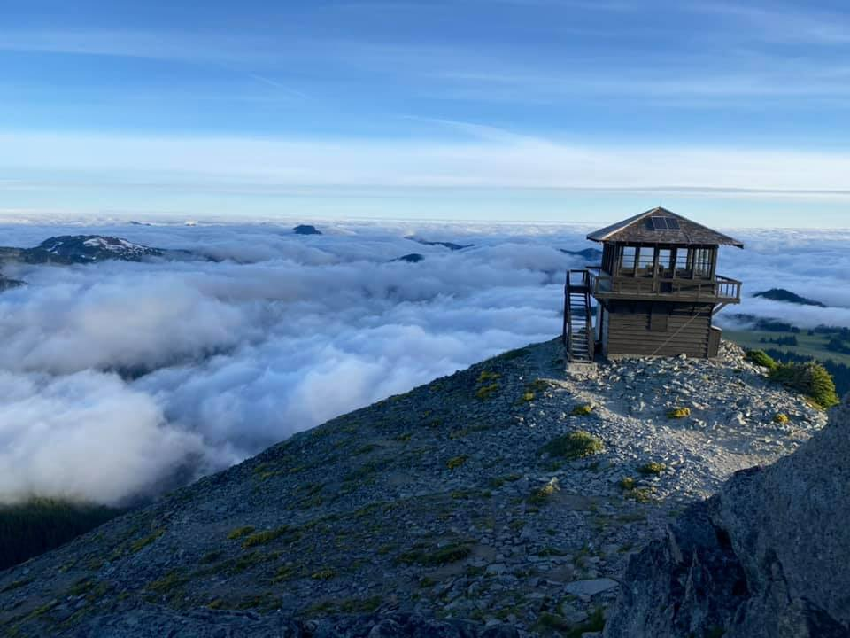
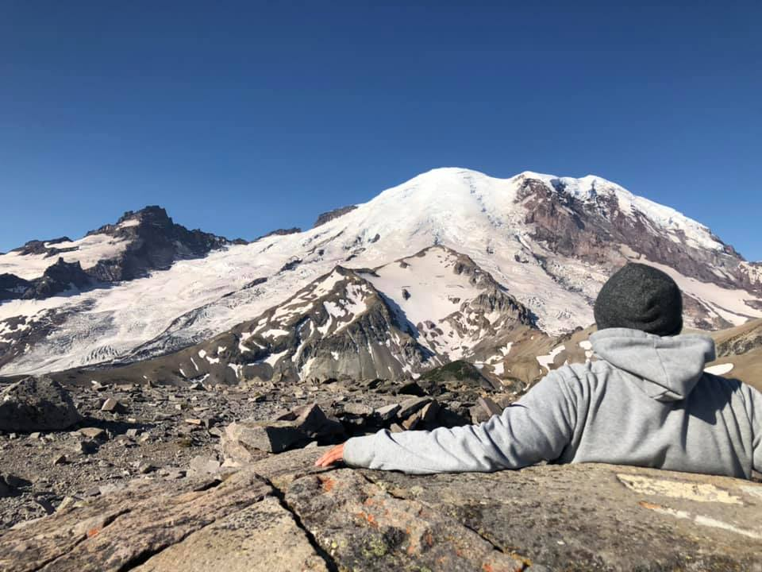
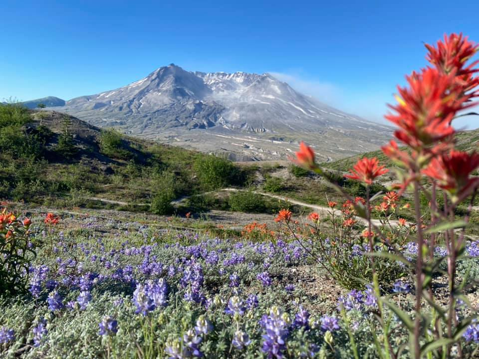

Follow a whitewater creek upstream as it speeds through the narrow gorges and glacier rocks to comet falls, a waterfalls that plunges nearly 301 feet! Take in the numerous waterfalls along the way and two monstrous ones meet you at the end.
Located in Ellensburg, and named after a famous ellensburg wrestling coach, this trail provides a great quick workout with an incredible view to pay off. You'll want to visit this trail in the spring or fall, because the scorching sun and lack of water can be dangerous.
Located in North Bend, this substantial hike will take you through second and third growth forests, pass by beautiful waterfalls, and ejoy a summit that few travel to. Enjoy the breathtaking views at the top where you can see views of Mt. Si, Mailbox Peak, and even Seattle on a clear day!
One of the most popular hikes in Washington, this hike boasts 100,000 visitors a year. This rugged mountain is in close proximity to Seattle, and it can even be viewed on a clear day from the peak. Ejoy the wildlife at the top while you have a quick snack before your descent.
As of late, there is a new slightly shorter trail to the top of this gruesome hike. In the past, hikers had to endure near vertical climbs to the top. Still, with the new trail, dont expect a cake walk. What rewards you at the end is a Mailbox full of misc nick nacks that you can take and replace with something of your own, and lets not forget the bragging rights.
Located near Paradise in Mt. Rainier, this loop will take you to some of the most popular spots to view Mt. Rainier in all her glory. In peak season, enjoy views of waterfalls, wild mountain flowers, and plenty of wildlife, beware of bears!
Prepare to have your breath taken away as you round the tree covered corner and view the massive peaks of Dragontail and Colchuck behind a crystal clear blue lake. It's become a right of passage to take a dip in the lake at the end of your long journey to the top. Make sure to bring extra clothing as the water is near freezing.
This two story fire lookout was built in 1934 and provides stunning 360 degree views of the surounding area of Mt. Rainier. Located just a short distance from the Sunrise visitors center, enjoy views of massive plains, mountain goats, bears, and one of the grandest views of Mt. Rainier on the mountain.
Also located near the Sunrise visitor center in Mt. Rainier is my all time favorite hike in the park. The 2nd burroughs hike will take you incredibly close to the face of the mountain. Enjoy some warm lunch in a stone circle seating area prepared by a jetboil while you gaze upon the majestic views before you.
Named after Harry Randall Truman, who refused to leave his homestead at spirit lake during the eruption of Mt. St. Helens. Begin at Johnston Ridge Observatory where you'll folllow a narrow poorly covered trail through valleys of mountain flowers. At the end is a stunning view of the crater in Mt. St. Helens.